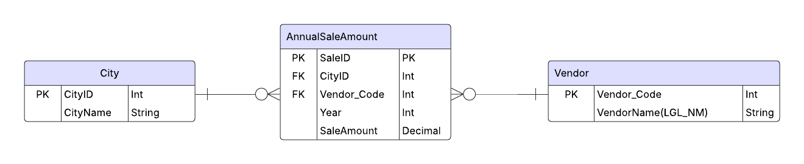

Team Members

Martin Zuluaga Ospina
Team Lead & Frontend Developer

Xintong Zou
Data Model Architect & Chart.js Developer
TsaiLing Duan
Git/GitHub Coordinator & CRUD Logic Planner
Carolina Aldana Yabur
UI/UX Designer & Documentation Specialist
Logical Data Model
The Entity Relationship Diagram (ERD) outlines the foundational structure of the eCommerce sales data, which will serve as the basis for developing a web application using the MVC (Model-View-Controller) framework. The data model is built around three main entities: City, Vendor, and AnnualSale. This design follows a normalized structure, ensuring efficient data storage, simplified maintenance, and optimized querying for analytical and reporting purposes.
